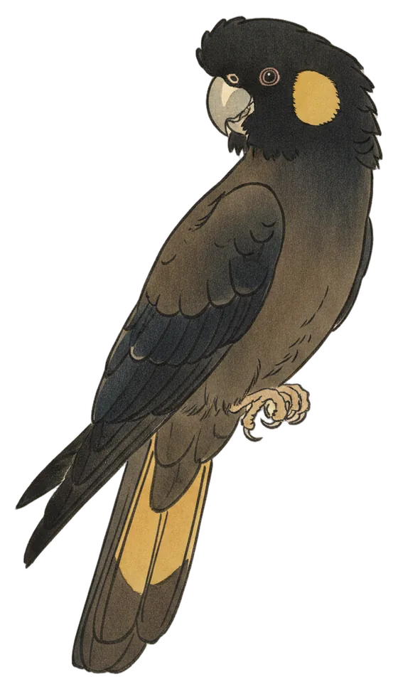

Return
Black-cockatoo breaks 66 days of silence
One wailing call at 4:08 pm yesterday brought the Yellow-tailed Black-Cockatoo back to the page, while a full dawn chorus and a busy afternoon made 278 calls across 16 species.

The Yellow-tailed Black-Cockatoo is back. It was heard once in the past 24 hours, a single call at 4:08 pm, after 66 days unheard. In the 67 days the station has been listening, it has turned up on just 2 of them.
The species lives in the Canberra region year-round and is a moderately common bird around Canberra, which makes the long gap all the more striking. It joins the week's arrivals list on its own, one call being enough.
Its loud, wailing calls carry for long distances, and it is often heard before being seen. In flight it flaps deeply and slowly, with a peculiar heavy, fluid motion often described as lazy.
- Calls
- 1
- First heard
- 4:08 pm
- Best call
- 85%
- Days heard
- 2 of 67